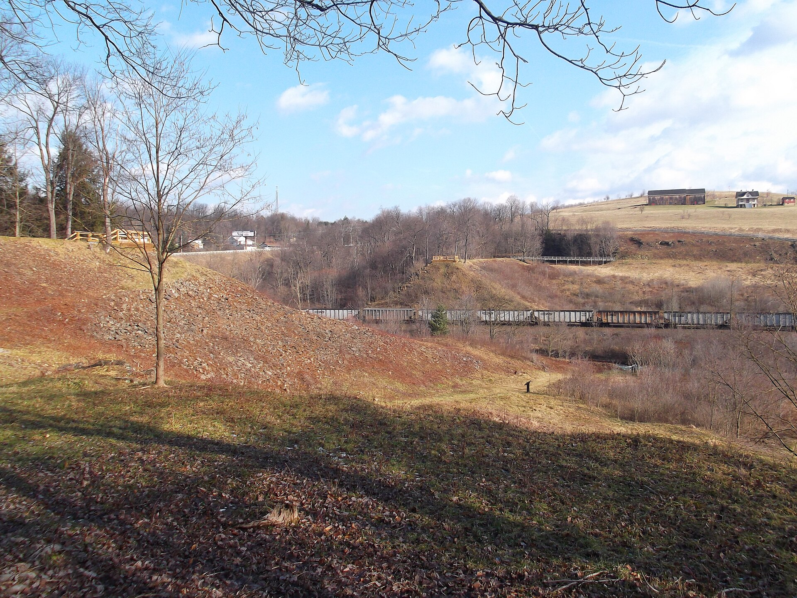

Chapter 9
The Wave Through the Valley
John G. Parke, Jr., stood on the western abutment of the South Fork Dam at approximately 2: 30 p. m. On Friday, May 31, 1889. He was the club’s resident engineer, twenty-three years old. He had watched the water rise all morning. He had watched it rise all the previous afternoon and through the night. The lake behind the dam had been climbing since the rain began on May 30. Now the water stood at the crest. It had reached the lowered crest that the club’s workmen had created in 1881 when they cut the top of the embankment to widen the carriage road. The original builders had set the crest higher. The club had lowered it. The water found the difference.
Water was moving over the embankment’s downstream face. It was not pouring over the spillway. The spillway was clogged. The club had installed fish screens across it to keep its stocked bass from escaping into the stream below. The screens caught debris. The debris blocked the flow. The water had no normal exit. It rose until it topped the embankment itself, finding the lowest point, which was the lowered crest, which was the patched and narrowed section that had been cut and re-filled without engineering supervision. The water moved through the earth.
Parke had ridden down the valley earlier that morning to send telegrams warning the towns below. He had reached South Fork village and sent word to Johnstown. He had ridden back up. Now there was nothing more to send. The telegraph lines still worked, but the message would have been about the present, not the future. The dam was failing as he stood there.
At approximately 3: 10 p. m., the embankment gave way. The water broke through the weakened section. The breach opened from the top down. The lake poured through it. The dam did not collapse all at once. It unraveled. The saturated fill, softened by hours of seepage and overtopping, lost cohesion. The water cut a channel through the breast. The channel widened. The lake emptied. Estimates of how long the emptying took varied. Some observers said thirty-five to forty-five minutes. Later computer modeling suggested approximately sixty-five minutes for most of the lake to drain. The difference mattered less than the result. The lake that had taken years to fill poured out in under an hour.
The volume was enormous. The reservoir held roughly twenty million tons of water. It left the dam in a wall that the narrow valley of the Little Conemaugh could barely contain. The wave that entered the valley was a moving body of water compressed between hillsides, driven by gravity and by the weight of the lake behind it. It carried the dam’s broken earth. It carried trees, boulders, and the wreckage of the club’s buildings near the shore. It carried everything the water could reach and tear loose.
The South Fork Dam stopped being a story about decisions. It became a story about consequences. The choices made over the preceding eight years — the lowered crest, the clogged spillway, the patched embankment, the absent engineer, the ignored warnings — entered the valley as a physical force. The deferred-maintenance debt came due. It was paid in the valley below, not at the club’s ledger in Pittsburgh.
The first settlement downstream was South Fork village, about a mile below the dam. The wave arrived there within minutes. The village sat at the confluence of the south fork and the main Little Conemaugh. The water struck South Fork with its full initial force. It swept through the low-lying areas. It destroyed buildings. It killed. The residents who could flee had been fleeing since Parke’s morning warning, but many had nowhere to go. The valley’s geography left few escape routes. The hillsides were steep. The water came from one direction and filled the only corridor available.
The Pennsylvania Railroad’s South Fork station stood in the village. The railroad was the valley’s communication spine. Its telegraph wires ran along the tracks beside the river. The station agent at South Fork had received Parke’s warning earlier. He had sent messages down the line. But the telegraph could only say that the dam was in danger. It could not say when or whether it would fail. The messages that reached East Conemaugh and Johnstown before 3: 10 p. m. Were warnings about a possibility. The messages that should have followed — the ones saying the dam had broken — had to compete with the flood itself for speed. The water moved faster than any wire could carry word.
The reason was physical. The valley between South Fork and Johnstown dropped roughly 470 feet in fourteen miles. The river channel was narrow, winding between steep ridges. A wall of water released from a reservoir at that elevation, flowing through a channel that constricted rather than widened it, would travel at speeds no messenger on horseback could match. The Pennsylvania Railroad’s own trains, the fastest vehicles in the valley, could not outrun what was coming. The wave averaged between fifteen and twenty miles per hour through the tighter sections, accelerating where the valley narrowed and slowing only where it spread into wider flats. But the flats were where people lived.
After South Fork, the wave struck Mineral Point. Mineral Point was a small mining settlement. It sat lower than South Fork, closer to the river. The wave hit it with most of its initial energy intact. The distance from the dam was still short. The valley had not yet widened enough to dissipate the force. Houses collapsed. The mine structures broke apart. The debris from Mineral Point joined the wall of wreckage moving downstream. Each settlement the wave destroyed added its material to the flood. The wave grew heavier, not lighter, as it advanced. It carried the ruins of everything it had already struck.

The telegraph operator at Mineral Point had received word from South Fork. He knew the dam was threatening. He may have known it had broken. But the interval between the break and the arrival was too short for any orderly evacuation. The wave reached Mineral Point perhaps ten to twelve minutes after it left the dam. In that time, the operator could send a message. He could not ensure anyone would act on it. People downstream received telegrams about a flood that was already on its way. The messages were reports on something already past.
The wave continued to East Conemaugh. East Conemaugh was a railroad town, larger than Mineral Point, with yards and shops and worker housing clustered along the stream. The Pennsylvania Railroad had facilities there. The wave arrived perhaps twenty minutes after the dam’s failure. It struck the railroad yards. It lifted freight cars. It smashed them into buildings. It tore through the worker housing along the riverbank. The destruction at East Conemaugh demonstrated what the valley’s shape was doing to the wave. The ridges on both sides compressed the water. The river channel could not spread the flow laterally. The energy stayed vertical. The wave rose rather than widened. It hit each settlement as a wall, not a sheet.
At East Conemaugh, the railroad’s telegraph office was still operating when the message came that the dam had failed. The operator sent word down the line to Johnstown. But the message and the water were now in a race, and the water was winning. The distance from East Conemaugh to Johnstown was roughly six miles. The wave would cover it in roughly fifteen minutes. The telegraph signal would travel faster, in fractions of a second. But the signal had to be received, read, understood, and acted upon. Each step cost seconds. The people in Johnstown who received the warning had minutes, not hours. Many had no idea what the message meant. A telegram saying the dam had broken at South Fork required the recipient to know where the dam was, to understand what its failure implied, and to decide to leave immediately. Most did not.
Franklin came next. Franklin was a small borough between East Conemaugh and Woodvale. The wave reached it perhaps thirty minutes after the dam broke. The destruction was cumulative. Franklin absorbed a portion of the wave’s energy, but the wave had been replenished by the water still draining from the reservoir. The lake had not finished emptying. The flow was continuous. The wave was not a single pulse but a sustained release, and the settlements along the valley were not separate disasters. They were stages in one continuous mechanism. The dam emptied. The valley transmitted. The towns absorbed.
After Franklin, the wave reached Woodvale. Woodvale was a company town. The Cambria Iron Company had built it for its workers. It sat on the flat land along the Little Conemaugh, directly upstream of Johnstown. The wave arrived at Woodvale perhaps forty minutes after the dam’s failure. The valley widened slightly here, into the flats where Cambria Iron had placed its housing. The wider channel spread the wave somewhat, but the volume was too great. The water covered the flats. It swept through the streets. It demolished the company houses. Woodvale was dense with people and structures. The destruction there was total.
Cambria Iron had its own telegraph connection to Johnstown. The company had been concerned about the dam for years. Its officials had corresponded with the South Fork Club about the dam’s condition. They had sent engineers to inspect it. They had raised the question of the lowered crest and the inadequate spillway. They had done everything a private corporation could do short of forcing repairs on property they did not own. When the dam broke, Cambria Iron’s telegraph operator sent word to Johnstown. But the water was minutes behind the wire. The warning and the wave arrived almost together.
The wave’s arrival at Woodvale marked the last stop before Johnstown. Between Woodvale and the city lay perhaps two miles of riverbank and rail line. The wave had traveled roughly twelve miles from the dam. It had lost some energy to friction, to the destruction of each settlement, to the widening of the valley in places. But it had gained mass. It carried the debris of South Fork, Mineral Point, East Conemaugh, Franklin, and Woodvale. It carried railroad cars, mine timbers, structural steel, trees, and earth. The leading edge of the wave was no longer water alone. It was a battering ram of compressed wreckage.
The valley between Woodvale and Johnstown narrowed again. The ridges closed in. The channel constricted. The wave, which had spread slightly across the Woodvale flats, compressed back into a narrower corridor. Its height rose. Its force concentrated. The geography that had made the valley a convenient path for a railroad and a river now made it a perfect transmitter for a flood wave. The same narrowing that gave the Little Conemaugh its fast current in normal times gave the flood its killing power.
The wave reached the outskirts of Johnstown at approximately 4: 07 p. m. Fifty-seven minutes had passed since the dam’s failure. In that time, the water had traveled fourteen miles, destroyed five settlements, killed an unknown number of people, and gathered a mass of debris that would define the catastrophe’s next phase. The city of Johnstown sat in a bend of the Little Conemaugh, ringed by hills. The river entered from the east, curved through the city, and exited past the Pennsylvania Railroad’s stone bridge. The bridge was a masonry arch span built to carry the railroad’s main line across the river. It stood at the western edge of the city. It was solid. It was narrow. It would not collapse. That was its danger.
The wave entered Johnstown. It struck the city’s lower districts first. The neighborhoods along the river — Kernville, Cambria City, the flats near the railroad yards — took the initial impact. The water was deep. It was fast. It carried the debris from every settlement upstream. It hit structures that were not built to withstand it. The buildings broke. Their material joined the flood. The wave moved through the city in a path determined by the river’s course and the city’s layout. It followed the channel. It spread into the streets that ran along the river. It pushed into the blocks of worker housing and commercial buildings that filled the lower ground.
The Pennsylvania Railroad’s stone bridge stood at the downstream end of the city. The wave reached it carrying the accumulated debris of fourteen miles of destruction. The bridge’s arches were narrow. The debris could not pass through them. It caught. It piled. It formed a dam. The water backed up behind it. The debris mounted. The pile grew. The wave had found an obstruction it could not sweep away, and the obstruction turned the city behind it into a basin.
The flood was a process manufactured upstream and then measured out in minutes and miles. Each settlement between the reservoir and Johnstown absorbed a portion of the energy. Each added its wreckage to the wave. The valley’s geography compressed the flow, concentrated the force, and transmitted the water with a speed that defeated every warning system available. The telegraph wires ran beside the tracks. The tracks ran beside the river. The river ran through the narrowest point in the valley. The water followed the same corridor as the messages. It simply moved through it faster than the messages could be acted upon.
The absentee ledger — the private record of gains and leisure maintained by men who lived far from the destruction their property could unleash — was being audited by the flood itself. The audit was conducted in the valley’s geography. The numbers were written in wreckage. The South Fork Club’s members were in Pittsburgh. The dam was in South Fork. The valley between them held the people who paid.
The storm that drove the flood was real. The rainfall on May 30 and 31 was extraordinary, the heaviest recorded in that part of the state. But the dam had been built to hold a reservoir in a watershed that produced heavy rains. The original engineers had specified a crest height and a spillway capacity for that purpose. The club had lowered the crest. The club had narrowed the spillway. The club had clogged the spillway with fish screens. The club had patched the embankment with loose earth and ungraded fill.
The dam failed not because the rain was unprecedented but because the structure had been systematically weakened. The water that topped the crest on May 31 did so because the crest had been cut down. The embankment that softened and gave way did so because it had been repaired without engineering. The spillway that could not pass the flow did so because it had been obstructed.
The dam’s defenders would later argue that no one could have foreseen the storm. The ASCE’s investigating committee would note that the dam’s design had been altered in ways that reduced its capacity precisely when that capacity was needed. The disagreement turned on a question of design intent versus design degradation. The original engineers built for the watershed. The club’s owners built for convenience. The rain tested both. The dam failed because it had been made to fail, not by the rain alone but by the accumulated changes that had reduced its margin of safety to zero.
The wave through the valley was the physical proof. It traveled the path that the geography provided. It moved at the speed that gravity and channel width dictated. It destroyed what lay in its path. The destruction was not random. It was sequential, predictable, and measured. Each settlement fell in order. Each absorbed its portion. Each passed the wave downstream. The mechanism was continuous. The valley was its housing. The dam was its trigger. The water was its charge.
Parke had watched the water top the crest. He had watched the embankment soften. He had watched the breach open. He had ridden to send warnings. The warnings had not been enough. They could not have been enough. The interval between the dam’s failure and the wave’s arrival at each settlement was shorter than the time needed to evacuate. The valley’s geography made it so. The dam’s condition made it so. The wave moved through the valley at a speed that turned every warning into a report on something already past.
The messengers had ridden toward a valley that had minutes. The minutes ran out. The water came. The valley paid the debt that the ledger had deferred. The wave reached Johnstown. It met the stone bridge. The debris piled. The water rose behind it. The city filled.
The wave reached Johnstown’s stone bridge at approximately 4: 07 p. m., where it met a mountain of debris and the next stage of catastrophe began.